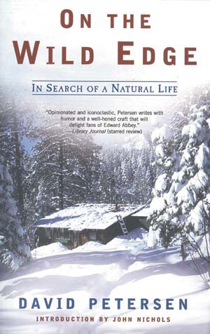

David Petersen would be the first to admit that his story is not unusual. Plenty of naturalists-turned-writers, including Edward Abbey, Wendell Berry and Rick Bass, have turned their backs on city life and gone looking for “someplace quieter and closer to the natural world.” In Petersen’s case, after “years of slow-burning boredom and simmering frustration,” he and his wife, Caroline, loaded all their possessions into a Volkswagen bus and left California for Colorado. What makes his story extraordinary - and a must-read for anyone who has considered making such a break - is Petersen’s ability to seduce, browbeat and cajole his readers into opening their hearts and minds to the raw power of life “on the wild edge.”
The book opens with Petersen on the first of many marathon walks. He tells how he came to be “striding up this comforting old mountain … high as a hippie on the pure animal joy of self-powered movement.” He invites us to help solve a murder mystery involving an elk carcass and a flock of ravens. And he delivers a lecture on the value of living “up here in the cold, quiet dusk, versus down there in the ‘real’ world of civilized, homogenized, capitalized culture.” Not bad for the first 17 pages.
The rest of the chapters continue in the same vein - riveting scenes segue into natural history lessons, hilarious escapades or lengthy discourses. Petersen is passionate about the life he’s chosen, and he is a fierce champion of the land and the wildlife he shares it with. Petersen has made it his business to become intimately acquainted with everything from the mating calls of turkeys -Gobble-obble gob-obble-obble- to the life cycle of his beloved aspen trees, or “quakies.” A single, simple detail, such as a claw-scarred piece of wood, can release a cascade of poignant memories. Petersen is at his best in these moments, weaving personal stories and natural history into seamless narrative that will quench a deep, if unrecognized, thirst in his readers.
At his worst (though who can blame him), Petersen allows the indignation he feels on behalf of the land to goad him into eloquent tirades - warning that, “if we don’t get our heads out of our investment portfolios and back into the real world soon, ecological collapse, global war, famine, disease, and anarchy inevitably will reign.”Whew.
Petersen’s story is both brutally honest and startlingly lovely. Though you may not agree that “we are well along the doomsday path to collective cultural insanity,” or subscribe to his belief that “if you depend on wild nature for your physical and mental well-being … then you naturally become a homespun animist,” you can’t help feeling energized and enriched by his words. Here is a writer with the knowledge, skill and courage to propose a different way of seeing and interacting with the natural world. Petersen writes: “It strikes me that the straightest path to a life of satisfying simplicity … is marked by intelligent balance; finding a complementary and comfortable mean between the material and the spiritual, between nature and culture, between personal and social, with plenty of time left after each day’s work in which to socialize, play, meditate, make music and love, and, of course, to enjoy a nice walk.” Now who can argue with that?
David Petersen is the former Western editor for Mother Earth News. Read his articles at www.MotherEarthNews.com. To order his book, see Mother Earth Shopping.
|
 On the Wild Edge: In Search of a Natural Life by David Petersen (Henry Holt and Co., 2005). Order this book at Mother Earth Shopping. |
|
|